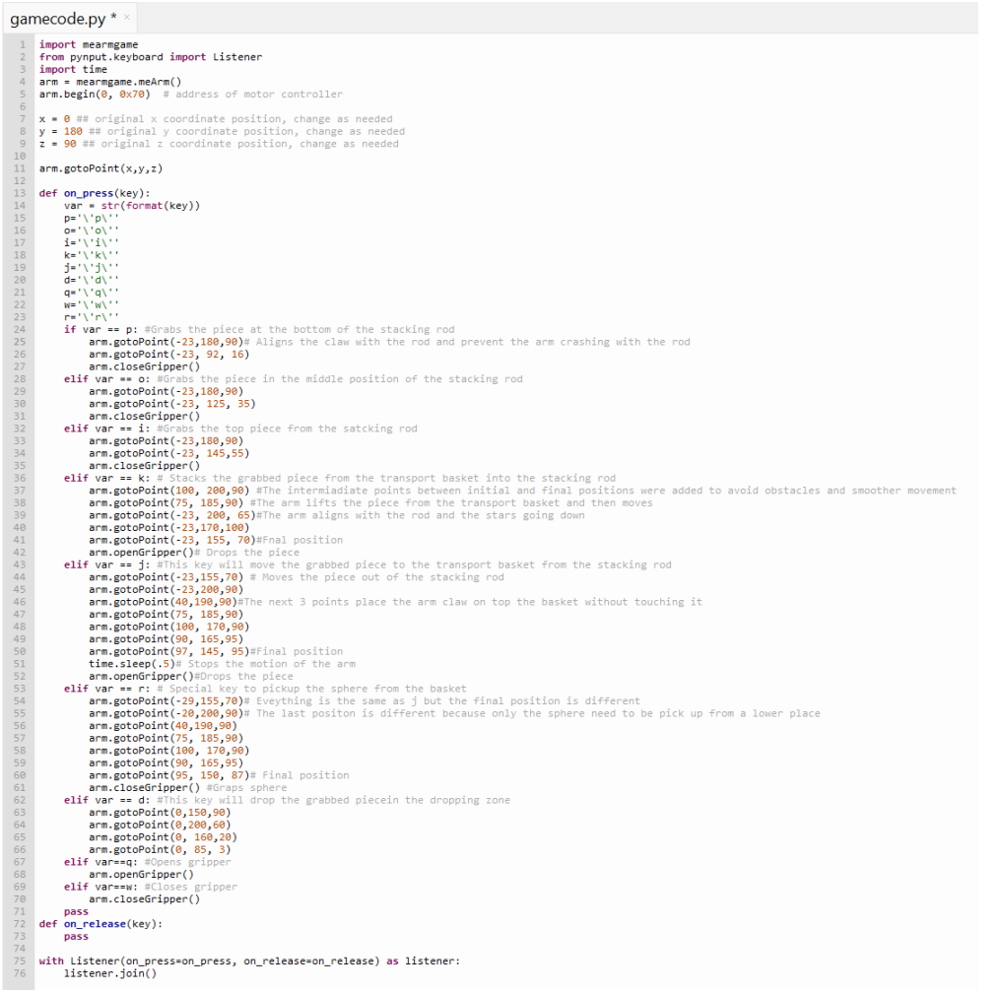
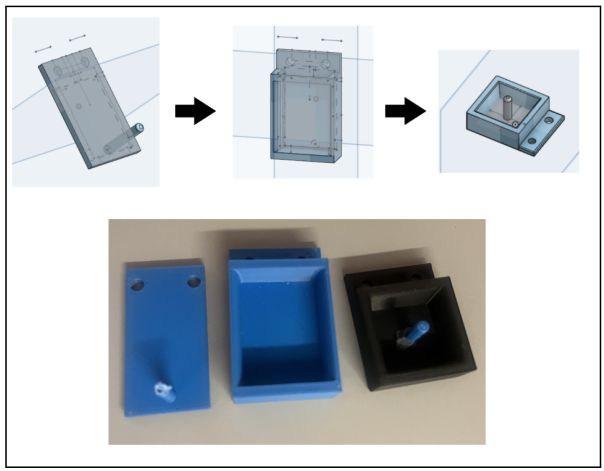
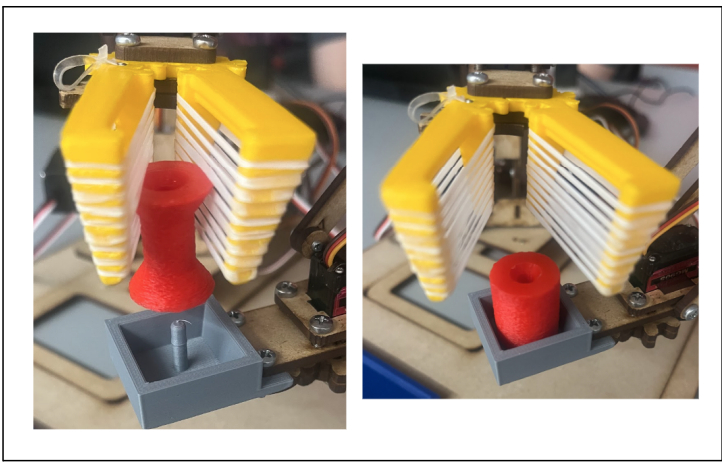
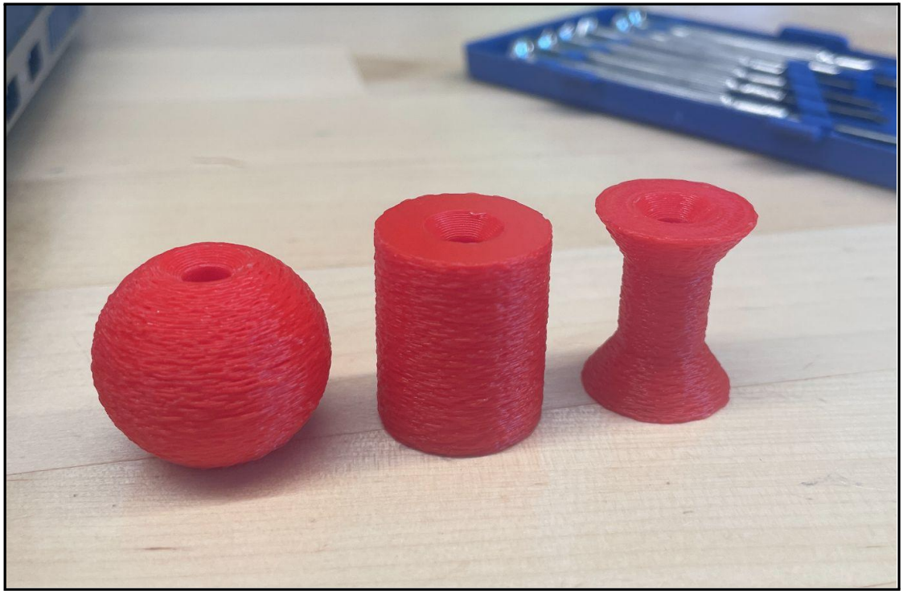

Hand Over Design Competition
A BME 210 team project that used three programmable Me-Arms to transfer irregular game pieces between scoring zones. I worked across programming, CAD concepts, 3D-printed prototypes, and motion tuning, which made this one of my earliest projects combining software and mechanical design in a single physical system.
The core design problem was not simply moving a robot arm. It was coordinating mechanics and software so three arms could hand off objects with different shapes without losing alignment.
The challenge
The team needed to move game pieces from one scoring zone to the other using three Me-Arms. The outer arms picked up and deposited pieces while the middle arm acted as a transporter. The design priorities were reducing drops, minimizing unnecessary motion, and coordinating transfer positions so the system could repeat the sequence efficiently.

My contributions
I wrote the base code used for the arms and developed the left-arm motion sequence by finding and refining target positions. On the mechanical side, I designed and printed an alternative set of game pieces and an early claw concept, and I helped develop the middle transfer piece in Onshape. The final competition system was a team design, so I distinguish my prototype contributions from the final outer gripper geometry produced by another teammate.

Iterating the transfer interface
The middle-arm interface went through several concepts. A peg alone was difficult to align, while a box alone did not secure the pieces well during side-to-side motion. The team combined the two ideas into a guided box-and-peg design: the walls helped funnel a piece into position and the peg maintained a consistent pickup location for the receiving arm.

Adaptive gripping
The final outer grippers used grooved printed jaws with rubber bands stretched across them to create a compliant gripping surface. That flexibility allowed one gripper concept to conform to multiple game-piece geometries instead of requiring a different trajectory or tool for each object.

Designing the game pieces for interaction
The pieces were also modified to make manipulation more reliable. The team added clearance around openings and used a rough printed surface to improve traction against the rubber-band grippers. This was a useful early lesson that robot performance can often be improved by co-designing the object and interface rather than changing only the robot.

What failed and what improved
The project also exposed practical limitations of low-cost robotic hardware. Worn joints and base-motor gears reduced positional accuracy over time, and loose mechanical connections required repair. Those problems reinforced the need to design around repeatability, backlash, tolerances, and hardware wear rather than assuming programmed coordinates will always produce the same physical result.
- Use mechanical features to make positioning more forgiving instead of relying only on software precision.
- Minimize unnecessary degrees of freedom when reliability matters.
- Prototype the handoff interface early because transfer geometry controls the whole workflow.
- Expect physical systems to drift as joints, fasteners, and motors wear.
- Mechanical and software iteration should happen together, not sequentially.